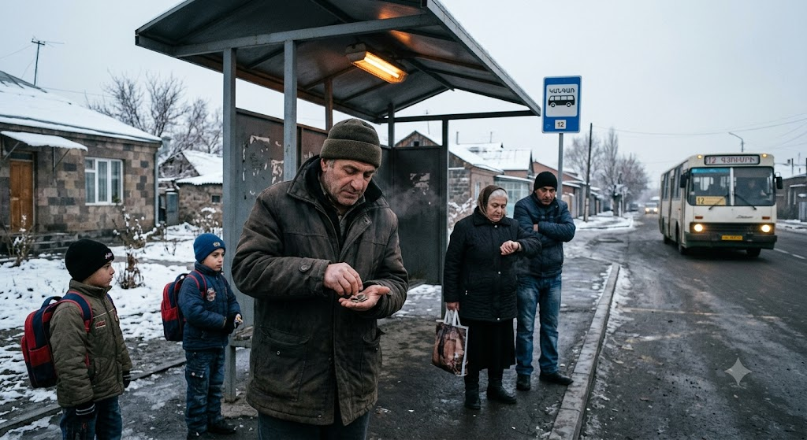

The Man Counts His Change
Originally written July 2010 • Uploaded to Facebook on Jul 7, 2010, 7:07 AM

He is standing outside his own home, waiting for the bus. While he waits, he looks around once more to see if any of the familiar sights he observed before have changed. He wonders for a brief moment what the absolute mathematical chances are of things actually shifting, checks his watch, and continues to wait. The bus only crawls around to this particular sector of the city because people like him ride it and pay their full, uncompromised fare—unlike all those parents with children over the age of five who somehow manage to avoid paying the proper price.
He is waiting for the line that will take him to the local grocery store. He has misplaced his can opener, and without it, he is utterly powerless to breach the tin containing his favorite regional delicacy: canned anchovies. As he marks time on the pavement, a few more commuters join him, falling into the exact same redundant choreography. They look at their watches, fix their gaze toward a distant point down the avenue that may or may not change, and then look back down at their wrists.
It is a well-acknowledged structural truth that they aren't merely waiting for a public transit vehicle; they are silently, desperately waiting for their underlying situation to change. They are waiting for a car to violently crash, for a lady to suddenly scream, for a man to lose his footing and fall, or for an emergency siren to wail. So, they wait patiently. Even if it were something entirely minor—like a stray bird coasting by to deposit excrement onto the bare concrete sidewalk—that would suffice. This bird would comfortably provide the central foundation for their day's conversation with the strangers awaiting them at the next transit station, or perhaps for the remainder of their lives wherever the bus finally drops them off.
Except for today. The bus is running a full minute late, and the huddle is getting visibly desperate, especially because the line is legendary for never being late. When a route slips, it can signify a myriad of hidden crises, and the crowd happily relishes brainstorming every catastrophic scenario that could have befallen the vehicle or the driver. They imagine the bus driver suddenly seized by insufferable abdominal pains demanding an immediate sprint to the nearest public restroom. Others imagine the coach spontaneously losing a front wheel, leaving the passengers to watch out the window as the rubber rolls casually past them down the highway. The children silently pray the bus won't turn up at all, regardless of the reason, because its absence would guarantee a late arrival to school, sparing them their teachers' faces for a little longer. Finally, he imagines the bus has simply been halted by a random mechanical bottleneck—perhaps catching fire because a factory worker neglected to tighten a minor bolt on an assembly line somewhere. At least he is passingly glad the bus is off-schedule; if it were precisely on time, he would have absolutely nothing to ponder during the transit.
Today is Saturday, a morning where people are allowed to sleep in. He knows this. He strongly suspects the driver had a late night drinking local liquor with his fellow transit workers and simply forgot to set his alarm clock. Yes, this must be the definitive truth. He imagines the driver now running frantically toward the terminal depot where his bus sits waiting patiently to be packed with warm asses and fake smiles—and occasionally, the cheers, sneers, and loud bangs of those unruly passengers who refuse to keep quiet. The driver secretly loves those chaotic riders because they grant him excellent material to trade with his colleagues later. Then again, he has no real way of knowing if the driver is genuinely delayed, or if it will turn out to be a he or a she behind the wheel.
They all continue to wait at the stand, and someone sneezes. The group shudders slightly, huddling closer together underneath an electric heat lamp mounted directly above their heads in a half-hearted attempt to warm them. They are fully aware that this heat lamp does as much for human skin as one suspended over restaurant food attempting to make a stale dish taste as if it were just freshly cooked. The commuters recognize the absolute futility of the hardware, yet they still nurse a faint hope that a sudden change in the wind and the heavy wool coats they wear will make a real difference, keeping them warm until the bus finally swings around the corner.
It has now been two and a half minutes since the bus should have arrived, and people begin to wonder if their individual watches are simply running a little fast. They very well could be. But their minds are stuck on the sneeze, thinking about how easily viral strains distribute themselves through the winter air. The adults hope it won't make them sick. The children, conversely, secretly pray for an illness so they can stay home from school, watch their favorite television programs, and think about life for a while.
It is the dead of winter, and everyone is aware that if the bus takes too long to show up, they will all ultimately freeze. Their noses will freeze solid, their ears will follow suit, and a sharp gust of wind will carry their frozen appendages away down the street. They don't mind that prospect too much for now, but they do mind the violent shaking and chronic sniffling that will surely ensue if the delay stretches out. The bus is now three minutes late, and he mutters very quietly to the air, "What a cold day today." He hopes no one hears him; if they do, he risks having to engage in casual conversation, which would completely spoil the internal narrative he is building about them all freezing to death in the despair of it all. He avoids all eye contact, slips his hands deep into his coat pockets, and fingers the coins he hopes will soon be dispensed in front of a smiling driver.
The crowd takes a collective deep breath, and the children are growing intensely impatient. It is not every day the bus arrives late. It is not every day it arrives early, either. In fact, he thinks to himself that he has never once witnessed a bus arrive early. He wonders if that is even scientifically possible. As he tracks this thought, an elderly woman nearby speaks up, declaring that she has never once witnessed a bus arrive ahead of schedule. Never in this weather, never in this neighborhood, and never in her lifetime. He assumes she must always take this exact line, and that she may have never set foot on any other transit vehicle in her life. This bus is simply never early. He wonders who is in charge of policing that layout.
Four minutes into the late arrival, just as everyone raises their wrists to log the milestone on their respective watches, the bus finally swings around the corner. It approaches the stand slowly, rolling up to the ineffective heat lamp and the passengers who have been waiting for a full four minutes. The children moan in disappointment because school is back on the schedule, and the old lady begins to edge forward, determined to snatch a prime seat before any of the uneducated youth can steal it from her. The doors hiss open, and the driver is a man. His eyes are not bloodshot, his beard is perfectly trimmed, his shirt is buttoned to the neck, and his lips bear no trace of sugar from a previously consumed donut. The elderly woman climbs aboard first, racing to claim her spot. Everyone else follows in a tight line.
*Ching, ching, ching*—the change drops into the farebox. *Beep, beep, beep*—the transit cards are swiped across the sensor. Smiles are exchanged, the driver seals the doors, and the bus pulls away. No one dares ask the driver why he was a full four minutes late. No one wants to spoil their own fun at this time of day, in this neighborhood, and in this kind of weather. They are all secretly hoping they will be the only ones delayed in reaching their final destinations, ensuring their rehearsed, catastrophic storytelling will perfectly complement a day defined by a late bus, a sneezing stranger, and a man who chose to wear no pants—especially in this weather.